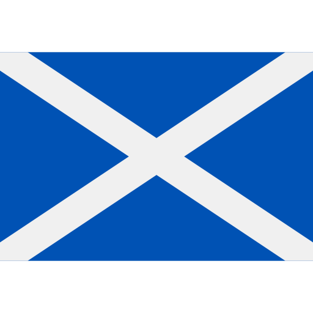
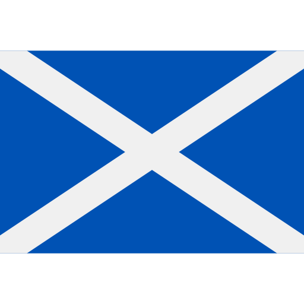
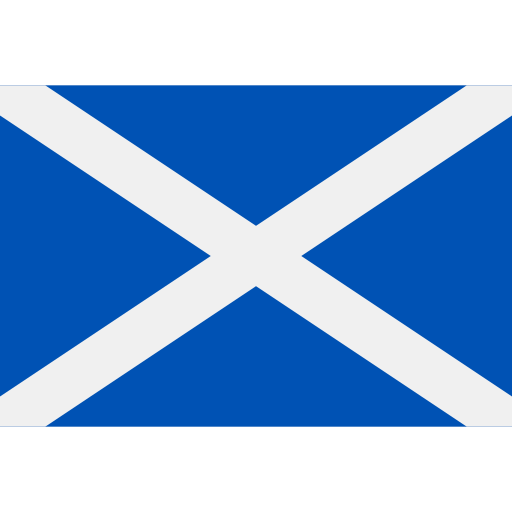
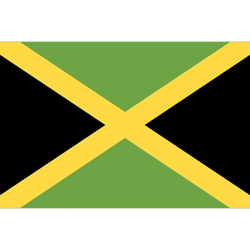
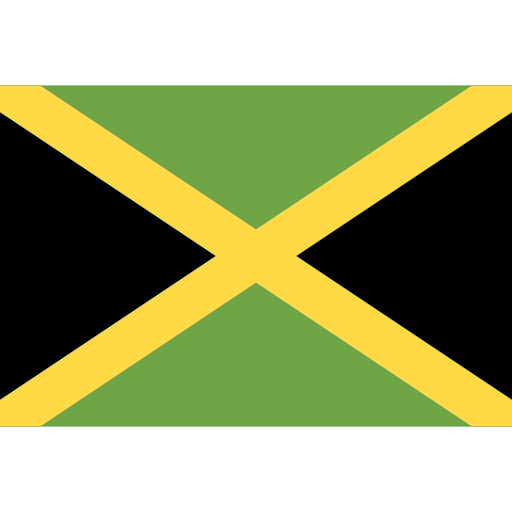
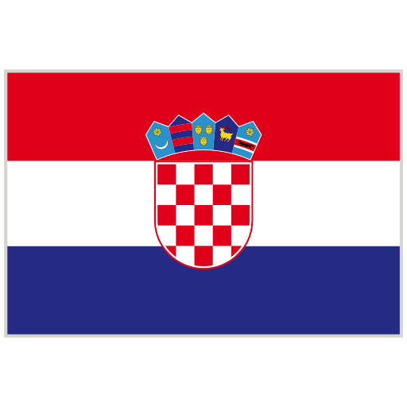
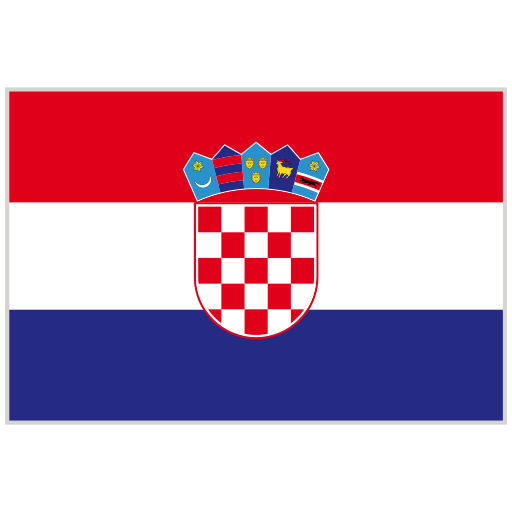

Alemania vs Escocia 
Alemania vs Escocia 
Fecha: 20 de junio de 2024
Descripción: Partido Inaugural de Copa America.
Alemania vs Escocia Fecha: 20 de junio de 2024
Descripción: Partido Inaugural de Copa America.
 Argentina vs Canadá
Argentina vs Canadá Fecha: 20 de junio de 2024
Descripción: Inaugural Copa America.
 México vs Jamaica 
México vs Jamaica Fecha: 22 de junio de 2024
Descripción: Partido de fase de grupos.
 España vs Croacia 
España vs Croacia Fecha: 20 de junio de 2024
Descripción: Partido Inaugural de Copa America.
 Brasil vs Costa Rica
Brasil vs Costa Rica 
Fecha: 20 de junio de 2024
Descripción: Partido Inaugural de Copa America.
 Portugal vs Chequia
Portugal vs Chequia Fecha: 20 de junio de 2024
Descripción: Partido Inaugural de Copa America.
 USA vs Bolivia
USA vs Bolivia 
Fecha: 20 de junio de 2024
Descripción: Partido Inaugural de Copa America.